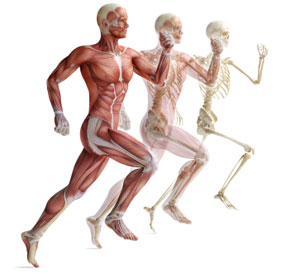

FREE

Introduction to Psychology
Introduction to Psychology explores the scientific study of human behavior and mental processes. It covers topics like perception, memory, learning, emotions, personality, and social interactions. The course examines how biological, psychological, and environmental factors influence thoughts and actions, providing insights into understanding oneself and others in everyday life.
FREE

COVID-19: Tackling the Novel Coronavirus
Tackling the novel coronavirus involves a combination of preventive measures like mask-wearing, hand hygiene, and social distancing, alongside widespread vaccination campaigns. Governments and health organizations emphasize testing, contact tracing, and public awareness to limit transmission. Scientific advancements in treatments and global cooperation remain key to controlling COVID-19's impact.
FREE
Health Informatics on FHIR
FHIR (Fast Healthcare Interoperability Resources) is a standard for exchanging healthcare information electronically. It enables seamless data sharing between systems using RESTful APIs and standardized formats like JSON or XML. FHIR supports interoperability for medical records, improving care coordination, patient access, and innovation in health applications and analytics.
FREE
Nutrition and Health: Macronutrients and Overnutrition
Nutrition and health are closely linked, as a balanced diet provides essential nutrients that support body functions, boost immunity, and prevent diseases. Proper nutrition includes consuming a variety of foods rich in vitamins, minerals, proteins, fats, and carbohydrates. Healthy eating promotes overall well-being, energy, and long-term vitality.